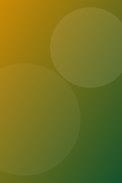
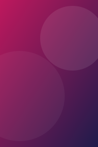

Pulpit
System projektowy pilota. Ta strona jest źródłem prawdy dla wyglądu: każdy nowy ekran składa się z komponentów pokazanych niżej, w stanach pokazanych niżej. Wszystkie wymiary są rzeczywistymi pikselami panelu 480 × 800.
Kolory
Powierzchnie niosą hierarchię, akcent niesie stan aktywny. Kolor semantyczny pojawia się tylko tam, gdzie ma znaczenie: czerwony to wyciszenie i błąd, zielony to potwierdzona dostępność.
--bg--surface--surface-2--surface-3--accent--ok--danger--text--dim--faintRytm i typografia
Odstępy są wielokrotnością 4 px. Marginesy ekranu to 24 px, odstęp między sekcjami 12 px, wewnątrz grupy 8 px.
Skala odstępów
Typografia
--t-num 4642--t-xl 26Łączenie z domem--t-lg 19LG OLED--t-md 15Wiersz listy, przycisk akcji--t-sm 13Etykieta segmentu, treść paska--t-cap 11Nagłówek sekcjiCele dotyku
Panel 4,3″ ma ok. 8,6 px na milimetr. Minimalny cel to 68 px, czyli ok. 8 mm. Dlatego segment ma 60 px wysokości w kontenerze 68 px, kafelek 88 px, a OK na D-padzie 100 px. Makieta renderuje się 1 : 1, więc te wymiary można mierzyć linijką na ekranie.
Komponenty
Nowy ekran nie wprowadza nowych kształtów. Dobiera je z tej listy.
Grupa wyboru — jedna wartość z listy podanej w snapshocie
Kafelki — skrót lub scena
Tarcza i kolumna — wartości ciągłe, zmieniane względnie
D-pad i przyciski akcji — polecenia chwilowe, bez stanu
Wiersz listy, wskaźnik i pasek ostrzeżenia
Decode 5.1aktywny
Gładzik — przesunięcie palcem oraz cztery strefy dotknięcia
Pole jest kołem o średnicy 240 px, więc przesunięcie w pionie ma dokładnie tyle samo miejsca co w poziomie — pas szeroki na cały ekran dawałby trzy razy mniej drogi w górę i w dół. Sylwetka jest ta sama co krzyżaka na ekranie TV: jedna nawigacja, jeden kształt. Powierzchnia jest jednolita i nie ma na niej wypełnionego przycisku — akcent oznacza w tym systemie stan, a nie akcję, więc podświetla się dopiero to, co właśnie naciskasz (tu: strefa prawa). Przesunięcie o 26 px wysyła krok w danym kierunku i liczy następny od nowa, więc jeden długi ruch przewija listę wielokrotnie. Dotknięcie bez ruchu działa jak klawisz strefy, a bliżej środka jak OK. Strefę wyznacza odległość od środka i kąt, nie prostokąty. Miejsce obok koła zajmują Menu i Home, zamiast zostawać puste.
Karuzela plakatów — pozycja wczytana i pozycja w trakcie pobierania

Fallout
Blade Runner 2049Tytuł leży na plakacie pod przyciemnieniem, więc nie zabiera wysokości karuzeli. Dwa plakaty po prawej są w trakcie pobierania.
Okno szczegółów pozycji
Ikony zakładek w pixel art — siatka 24 × 24, rysowana w skali 2 ×
Ikony są rysowane wprost w tekście źródła pixel-icons.js: jeden znak to jeden piksel, kropka znaczy przezroczysty, a pozostałe znaki odsyłają do wspólnej palety jedenastu barw. Poprawia się je w edytorze, nie w programie graficznym. Ponieważ sprite ma własne kolory, wybranej zakładki nie znaczy już barwa ikony, tylko jej tło. W firmware ta sama siatka staje się obrazem indeksowanym, skalowanym dwukrotnie metodą najbliższego sąsiada — bez antyaliasingu, bo w pixel arcie nie ma czego wygładzać.
Stany
Każde sterowanie ma te same pięć stanów. To one, a nie kształt, niosą informację o tym, czy pilot ma potwierdzony stan z Home Assistanta.
Mapowanie na LVGL
Makieta nie jest kodem do przepisania. Ta tabela mówi, czym każdy komponent ma być w firmware.
| Komponent | LVGL | Uwaga przy implementacji |
|---|---|---|
.seg | lv_obj + lv_button | Zaznaczenie przez styl i dolną krawędź (border_side), nie przez zmianę układu. |
.tile | lv_button + lv_image | Logotypy wcześniej przeskalowane do RGB565 z przezroczystością. |
.pad | 5 × lv_button | Pozycjonowane bezwzględnie na okrągłym lv_obj. |
.dial | lv_arc | Domyślny lv_arc skacze do miejsca dotknięcia. Wyłączyć to i liczyć zmianę kąta w LV_EVENT_PRESSING. |
.level | lv_bar | Nie lv_slider — ten również skacze do dotyku. Gest pionowy obsłużyć ręcznie, polem chwytu jest cała kolumna. |
.list-row | lv_button + flex | Układ identyczny na każdym ekranie ustawień. |
.trackpad | lv_obj + własne zdarzenia | lv_indev_get_vect() w LV_EVENT_PRESSING podaje przyrost ruchu palca — dokładnie to, czego potrzebuje gest. Strefy liczone z lv_indev_get_point() przy puszczeniu, o ile palec się nie przesunął. |
.rail | lv_obj przewijalny | lv_obj_set_scroll_dir(LV_DIR_HOR) i lv_obj_set_scroll_snap_x. Przewijanie i tak obsługuje LVGL, nie trzeba własnego gestu. |
.poster | lv_image | Obraz pobiera zadanie robocze i przekazuje gotową bitmapę kolejką — zadanie UI nigdy nie czeka na sieć. Do czasu odebrania obrazu obiekt pokazuje szkielet. |
.sheet | lv_obj na lv_layer_top | Przyciemnienie tła to osobny obiekt z bg_opa, pod oknem. |
.wake | lv_layer_top | Warstwa nad ekranami, zdejmowana dopiero po nowym snapshocie. |
| tokeny | lv_style_t | Jeden zestaw stylów w ui/theme/; ekrany nie definiują własnych kolorów. |